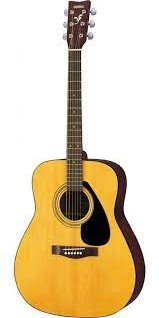
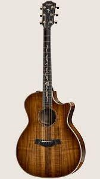

Acoustic Guitars Section
Acoustic Guitars Section
|Home|
|Acoustic Guitars|
|Electric Guitars|
|Bass Guitars|
|Drums|
|Amplifiers|| YAMAHA F310P | |||
|---|---|---|---|
|  | Design/Architecture Detail | Description | |
|
The Yamaha F310P is a great acoustic guitar for beginners and for use as a “camping” guitar those situations where the guitar is likely to get some rough treatment. If it were not for the high action, this guitar would be perfect for a “cheapie” and would have scored a nine for value for money. |
||
| Price: ₱12,500.00 | |||
| Taylor 424ce-K Limited Edition | |||
|  | Design/Architecture Detail | Description | |
|
The Taylor 424ce is equally at home fingerpicking or strumming big, brash chords. With its rich tonal variation and lovely organic feel, it's the perfect partner for players who need a guitar that can compete right across the board. |
||
| Price: ₱87,999.00 | |||
|Go Back From the Top|